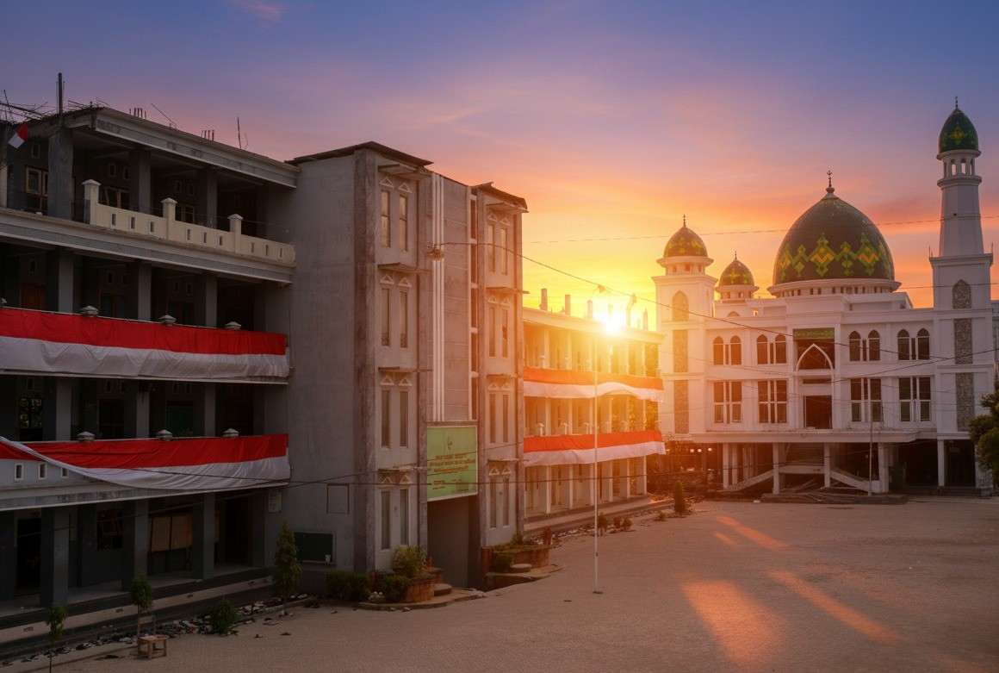

<meta charset="UTF-8">
<meta name="viewport" content="width=device-width, initial-scale=1.0">
<title>Profil - SMK Wachid Hasyim</title>
<meta name="description"
    content="Profil, Sejarah, Visi Misi, dan Tujuan SMK Wachid Hasyim Palengaan. Berdiri sejak 2007, mengintegrasikan nilai pesantren dengan kompetensi kejuruan.">
<meta name="keywords" content="Sejarah SMK Wachid Hasyim, Visi Misi SMK, Profil Sekolah, Pendidikan Vokasi">
<meta name="robots" content="index, follow">

<link rel="icon" type="image/png" href="assets/img/LOGO_SMK-removebg-preview.png">
<script src="https://cdn.tailwindcss.com"></script>
<link rel="stylesheet" href="https://cdnjs.cloudflare.com/ajax/libs/font-awesome/6.4.0/css/all.min.css">
<link href="https://unpkg.com/aos@2.3.1/dist/aos.css" rel="stylesheet">
<script src="assets/js/navbar.js"></script>
<style>
    .nav-link {
        transition: all 0.3s ease;
    }

    .nav-link:hover {
        color: #10b981;
        transform: translateY(-2px);
    }
</style>
<!-- Navbar -->
<nav class="bg-white shadow-lg sticky top-0 z-50">
    <div class="container mx-auto px-4">
        <div class="flex justify-between items-center py-4">
            <div class="flex items-center space-x-3">
                

                <div>
                    <h1 class="text-xl font-bold text-gray-800">SMK Wachid Hasyim Palengaan</h1>
                    <p class="text-xs text-gray-600">Religius, Berkarakter, Unggul</p>
                </div>
            </div>
            <!-- Desktop Menu -->
            <div class="hidden lg:flex items-center space-x-8">
                <a href="index.html" class="nav-link text-gray-700 font-medium">Beranda</a>
                <a href="Profil.html" class="nav-link text-gray-700 font-medium">Profil</a>
                <a href="manajeman.html" class="nav-link text-gray-700 font-medium">Manajeman</a>
                <a href="fasilitas.html" class="nav-link text-gray-700 font-medium">Fasilitas</a>
                <a href="berita.html" class="nav-link text-gray-700 font-medium">Berita</a>
                <a href="ppdb.html" class="nav-link text-gray-700 font-medium">PPDB</a>
                <a href="kontak.html" class="nav-link text-gray-700 font-medium">Kontak</a>
            </div>

            <!-- Mobile Menu Button -->
            <button class="lg:hidden text-gray-700 hover:text-green-600 transition" onclick="toggleMobileMenu()">
                <i class="fas fa-bars text-2xl"></i>
            </button>
        </div>

        <!-- Mobile Menu -->
        <div id="mobileMenu" class="mobile-menu hidden lg:hidden pb-4 transition-all duration-300">
            <a href="index.html"
                class="block py-2 text-gray-700 hover:text-green-600 pl-4 border-l-4 border-transparent hover:border-green-600">Beranda</a>
            <a href="Profil.html"
                class="block py-2 text-gray-700 hover:text-green-600 pl-4 border-l-4 border-transparent hover:border-green-600">Profil</a>
            <a href="manajeman.html"
                class="block py-2 text-gray-700 hover:text-green-600 pl-4 border-l-4 border-transparent hover:border-green-600">Manajeman</a>
            <a href="fasilitas.html"
                class="block py-2 text-gray-700 hover:text-green-600 pl-4 border-l-4 border-transparent hover:border-green-600">Fasilitas</a>
            <a href="berita.html"
                class="block py-2 text-gray-700 hover:text-green-600 pl-4 border-l-4 border-transparent hover:border-green-600">Berita</a>
            <a href="ppdb.html"
                class="block py-2 text-gray-700 hover:text-green-600 pl-4 border-l-4 border-transparent hover:border-green-600">PPDB</a>
            <a href="kontak.html"
                class="block py-2 text-gray-700 hover:text-green-600 pl-4 border-l-4 border-transparent hover:border-green-600">Kontak</a>
        </div>
    </div>
</nav>

<section id="sejarah" class="py-16 bg-gray-50">
    <div data-aos="fade-up" data-aos-duration="1000" class="container mx-auto px-4">

        <!-- Judul -->
        <h2 class="text-3xl md:text-4xl font-bold text-center text-gray-800 mb-14">
            Sejarah Sekolah
        </h2>

        <!-- Grid Sejarah -->
        <div class="grid grid-cols-1 md:grid-cols-2 gap-10 items-center">

            <!-- Foto Sejarah -->
            <div>
                
            </div>

            <!-- Teks Sejarah -->
            <div class="space-y-5 text-gray-700 text-justify leading-relaxed">
                <span class="inline-block bg-green-600 text-white px-4 py-1 rounded-full text-sm mb-4">
                    Berdiri sejak 2007
                </span>
                <p>
                    SMK Wachid Hasyim Palengaan didirikan pada tahun 2007 atas prakarsa Pengasuh Pondok Pesantren Kebun
                    Baru, KH. Mu’afa Asy’ari, sebagai upaya menghadirkan
                    lembaga pendidikan kejuruan yang mampu mengintegrasikan keterampilan vokasional dengan nilai-nilai
                    keislaman. Pendirian sekolah ini dilatarbelakangi
                    oleh rendahnya minat masyarakat Palengaan terhadap pendidikan formal kejuruan pada masa itu,
                    sehingga diperlukan lembaga SMK yang berlandaskan budaya pesantren
                </p>

                <p>
                    Pada awal berdirinya, SMK Wachid Hasyim Palengaan berlokasi di kawasan Pasar Palengaan dan diminati
                    oleh santri dari berbagai pondok pesantren di antaranya, Pondok Pesantren Kebun Baru, Pondok
                    Pesantren Karang Manggis, Pondok Pesantren Taman Sari, dan Pondok Pesantren Sekar Anyar.
                    Seiring berkembangnya lembaga pendidikan kejuruan di masing-masing pesantren, pada tahun 2015 SMK
                    Wachid Hasyim Palengaan dipindahkan ke lingkungan Pondok Pesantren Kebun Baru
                    untuk memperkuat pembinaan karakter dan nilai religius peserta didik.
                </p>

                <p>
                    Hingga saat ini, SMK Wachid Hasyim Palengaan terus berkembang sebagai sekolah kejuruan berbasis
                    pesantren yang berkomitmen mencetak lulusan yang kompeten di bidang teknologi, berakhlakul karimah,
                    serta siap menghadapi tantangan dunia kerja dan pendidikan lanjutan.
                </p>

            </div>
        </div>

    </div>
</section>

<!-- Footer -->
<footer class="bg-green-600 text-white py-12">
    <div class="container mx-auto px-4">
        <div class="grid md:grid-cols-4 gap-8 mb-8">
            <div>
                <div class="flex items-center space-x-3 mb-4">
                    <div class="w-12 h-12 rounded-lg flex items-center justify-center">
                        
                    </div>
                    <div>
                        <h4 class="text-lg font-bold">SMK Wachid Hasyim Palengaan</h4>
                        <p class="text-xs text-white-400">Religius, Berkarakter, Unggul</p>
                    </div>
                </div>
            </div>

            <div>
                <h4 class="text-lg font-bold mb-4">Menu Cepat</h4>
                <ul class="space-y-2 text-white-400 text-sm">
                    <li><a href="index.html" class="hover:text-white transition">Beranda</a></li>
                    <li><a href="manajeman.html" class="hover:text-white transition">Manajemen</a></li>
                    <li><a href="ppdb.html" class="hover:text-white transition">PPDB</a></li>
                </ul>
            </div>

            <div>
                <h4 class="text-lg font-bold mb-4">Program</h4>
                <ul class="space-y-2 text-white-400 text-sm">
                    <li>Teknik Komputer & Jaringan</li>
                </ul>
            </div>

            <div>
                <h4 class="text-lg font-bold mb-4">Kontak</h4>
                <ul class="space-y-2 text-white-400 text-sm">
                    <li><i class="fas fa-map-marker-alt mr-2"></i>Palengaan, Pamekasan, Jawatimur</li>
                    <li><i class="fas fa-phone mr-2"></i>0819-3925-7300</li>
                    <li><i class="fas fa-envelope mr-2"></i>smkwh.plg@gmail.com</li>
                </ul>
            </div>
        </div>

        <div class="border-t border-white-800 pt-8 text-center text-white-400 text-sm">
            <p>&copy; 2026 SMK Wachid Hasim. All rights reserved.</p>
        </div>
    </div>
</footer>

<script src="https://unpkg.com/aos@2.3.1/dist/aos.js"></script>
<script>
    AOS.init();
</script>